초음파비파괴검사산업기사(구) (2005-03-06 기출문제)
1과목: 초음파탐상시험원리
1. 금속 재료를 초음파탐상할 때 가장 많이 사용하는 주파수의 범위는?
- 1 - 25kHz
- 1 - 5MHz
- 1 - 1000kHz
- 15 - 100kHz
(정답률: 알수없음)

2. 아크릴 수지에서 철로 초음파가 입사하여 철에서 굴절 종파가 발생할 때 굴절된 종파의 각도 범위는? (단, ① 아크릴 수지속도 : 2730 m/sec, ② 철에서 종파속도 : 5920 m/sec, ③ 철에서 횡파속도 : 3250 m/sec 이다.)
- 0°∼ 27.5°
- 27.5°∼ 57.1°
- 57.1°∼ 90°
- 0°∼ 90°
(정답률: 알수없음)
3. 수침법으로 철강재를 검사할 때 입사각이 20도이면 철강재에서의 횡파의 굴절각은? (단, 물의 종파속도는 1,500m/sec이고, 철강재의 횡파 속도는 3,200m/sec이다)
- 약 30도
- 약 40도
- 약 50도
- 약 60도
(정답률: 알수없음)
4. 초음파탐상시험시 불연속으로부터의 지시 강도가 거리의 증가에 따라 지수적으로 감소하는 영역은?
- 원거리 음장영역
- 근거리 음장영역
- 불감대 영역
- 소멸 영역
(정답률: 알수없음)
5. 다음 중 초음파탐상시험과 거리가 먼 것은?
- 두꺼운 재료에서도 탐상이 가능하다.
- 탐촉자 한 개로 결함측정이 가능하다.
- 결함크기 및 결함깊이를 알 수 있다.
- 표면결함 검출에 매우 우수하다.
(정답률: 알수없음)
6. 초음파탐상시험에서 대비시험편에 관한 다음 설명중 올바른 것은?
- 인공결함으로 평저공을 사용하는 것이 가장 좋다.
- 대비시험편이 녹이 발생하지 않도록 방청유 등을 도포하여 관리하는 것이 좋다.
- 시험대상물과 동일한 재료만으로 제작해야 한다.
- 대비시험편과 표준시험편의 사용목적은 동일하다.
(정답률: 알수없음)
7. 비파괴시험에 의한 표층부결함 검출에 대해 기술한 것으로 다음 중 올바른 것은?
- 표층부 내부결함의 검출에 적합한 비피괴시험은 주로 수압시험, 자분탐상시험, 침투탐상시험, 와전류탐상시험 등이 있다.
- 자분탐상시험은 결함에 의한 누설자장에서의 자분의 부착현상을 이용하고 있고, 비자성재료에만 적용할 수 있다.
- 전자유도시험은 전자유도현상과 와전류의 변화를 이용하며, 개구해 있지 않는 표층부 결함도 검출할 수 있지만 알루미늄합금과 같은 비자성재료에는 적용할 수 없다.
- 외관시험은 원칙적으로 육안에 의하지만 필요에 따라 확대경, Convex자, 전용게이지 등도 이용되고, 표면결함 유무의 확인이나 치수측정을 한다.
(정답률: 알수없음)
8. 수직탐상에서 탐상목적과 탐상방향에 관한 설명중 올바른 것은?
- 초음파의 전파방향에 평행하게 넓게 퍼져 있는 결함으로부터의 에코높이는 검출이 용이하다.
- 결함이 가장 잘 검출되는 방향은 일반적으로 결함의 면적이 최대로 되는 방향이다.
- 단조재에서는 주조시의 결함이 단조에 의한 소성변형에 따라서 변형이 되기 때문에 결함의 방향 등은 추정할 수 없다.
- 단강품에 발생하는 결함은 탐상이 가장 용이한 방향에서 수직탐상만에 의해 모두 검출할 수 있다.
(정답률: 알수없음)
9. 초음파 탐상기에서 원하는 반사파만을 나타낼 수 있도록 일정한 구간 또는 일정한 진폭을 갖는 펄스만을 선택할 수 있는 회로는?
- 타이머(Timer) 회로
- 펄스(Pulse) 회로
- 소인(Sweep) 회로
- 게이트(Gate) 회로
(정답률: 알수없음)
10. 산란감쇠계수 0.006(dB/㎜)인 500㎜ 강재를 수직탐상하여 저면에코가 40%로 확인되었다면 감쇠를 보정한 실제의 저면 에코높이는? (단, 반사손실을 무시한다.)
- 20%
- 40%
- 80%
- 100%
(정답률: 알수없음)
11. 초음파탐상시험에서 결함의 검출이 어떤 영역에서 정량적 평가가 가장 좋은가?
- 불감대
- 근거리 음장
- 원거리 음장
- 고주파수대
(정답률: 알수없음)
12. 초음파탐상을 적용한 기술중에 횡파를 이용한 적용기술이 아닌 것은?
- 수중에서 초음파를 이용한 잠수함 탐지기술
- 강재 용접부의 결함탐상 기술
- 피검체의 물리적 특성(구조,입자) 및 탄성율 측정
- 두 물질간의 접합(Bond) 상태
(정답률: 알수없음)
13. 초음파 공진법으로 시험체의 두께를 측정할 때 2MHz의 주파수에서 기본공명이 발생했다면 이 시험체의 두께는? (단, 시험체의 초음파 속도는 4800m/sec이다.)
- 1.2mm
- 2.4mm
- 3.6mm
- 4.8mm
(정답률: 알수없음)
14. 아크릴로 진행하는 종파의 파장이 강재로 진행하는 주파수 4MHz인 종파의 파장과 같으려면 어떤 주파수를 가진 초음파를 보내야 하는가? (단, 아크릴과 강재의 종파속도는 각각 2,730m/sec와 5,900m/sec 이다.)
- 약 1.8MHz
- 약 3.6MHz
- 약 5.8MHz
- 약 8.6MHz
(정답률: 알수없음)
15. 종파의 속도가 아래 재질중 어떤 것이 제일 빠른가?
- 물
- 공기
- 알루미늄
- 스테인레스강
(정답률: 알수없음)
16. 초음파를 이용하여 시험편을 검사할 때 시험편의 표면이 거친 경우 내부의 불연속 지시에서 나오는 에코(echo)의 증폭치는?
- 증가한다.
- 감소한다.
- 변하지 않는다.
- 주파수를 변화시킨다.
(정답률: 알수없음)
17. A-주사법으로 검사시 수평기선 축에서 증폭치가 급변하는 매우 강한 지시가 나타나 그 부위를 다시 검사하여 보면 두번 다시 나타나지 않는 경우가 있다. 이의 주원인은?
- 기공에 의해서
- 불규칙한 형상의 균열에 의해서
- 블로우 홀에 의해서
- 전기적인 잡음에 의해서
(정답률: 알수없음)
18. 초음파탐상 평가결과의 신뢰성을 향상시키기 위하여 반드시 고려되어야 할 사항은?
- 생산적인 비파괴평가 기법의 적용
- 비파괴검사 시설의 자동화와 장기 검사공정 이룩
- 비파괴검사기술자 자격인정 및 인증제도의 확립
- 수동검사의 적극 활용
(정답률: 알수없음)
19. 진동자를 설계할 때 기본적으로 고려해야 할 사항이 아닌것은?
- 압전재의 재질
- 전극의 형태 및 구성
- 댐핑재의 특성
- 접촉매질의 종류
(정답률: 알수없음)
20. 두께가 2cm인 청동 판재의 공진주파수는? (단, 청동 판재의 V = 4.43x105cm/sec)
- 0.903MHz
- 0.443MHz
- 0.222MHz
- 0.111MHz
(정답률: 알수없음)
2과목: 초음파탐상검사
21. 펄스반사식 검사장비에서 필터나 리젝션을 부착하는데 이들의 목적 또는 효과에 대한 설명이 틀린 것은?
- 리젝션의 목적은 임상에코 같은 것을 억제하기 위한 것이다.
- 리젝션의 사용시 장치 증폭직선성이 나빠진다.
- 필터는 파형을 평활하게 하기 위한 것이다.
- 필터를 사용하면 장치 증폭직선성이 나빠진다.
(정답률: 알수없음)
22. 전자주사형 초음파탐상기에 사용되는 배열형(Array) 탐촉자의 주된 특징에 대한 설명으로 틀린 것은?
- 고속 자동탐상에 적합하다.
- 거리 및 방해분해능이 우수하다.
- 복합재료 등에서의 미소결함 검출에 적합하다.
- 음향집속은 음향렌즈에 의한다.
(정답률: 알수없음)
23. 초음파탐상시험시 CRT의 수평축에서 결함에코만을 나타내기 위해 설정하는 것은?
- DAC회로
- 리젝션
- 게인(gain)
- 게이트
(정답률: 알수없음)
24. 초음파탐상시험시 펄스 폭 손잡이를 조정하여 폭을 넓히면 어떻게 되겠는가?
- 송신 출력은 올라가고 분해능은 떨어진다.
- 송신 출력은 내려가고 분해능은 올라간다.
- 송신 출력과 분해능이 모두 내려간다.
- 송신 출력과 분해능이 모두 올라간다.
(정답률: 알수없음)
25. 다음의 초음파를 이용한 측정방법에서 매질의 속도를 측정할 수 없는 방법은?
- 펄스 반사법
- 투과법
- 공진법
- 세기측정법
(정답률: 알수없음)
26. 초음파를 발생시키는 변환자 또는 방법으로 송ㆍ수신을 동시에 할 수 없는 것은?
- PAT 변환자
- Quartz 변환자
- EMAT
- Laser에 의한 발생
(정답률: 알수없음)
27. 초음파탐상검사시 리젝션(Rejection)을 사용했을 때 주로 나타나는 현상으로 옳은 것은?
- 시간축 직선성이 상실된다.
- 증폭 직선성이 상실된다.
- 브라운관의 선명도가 떨어진다.
- 전기적인 잡음이 많아진다.
(정답률: 알수없음)
28. 음파와 전자파를 설명한 내용 중 틀린 것은?
- 음파는 전자파에 비해 속도가 느리다.
- 음파는 금속중에서 잘 진행된다.
- 음파는 전자파에 비해 파장이 길다.
- 전자파는 진공중에서 진행하지 못한다.
(정답률: 알수없음)
29. 초음파 탐상장치의 각 구성 부분과 기능에 대한 설명으로 옳지 않은 것은?
- 소인회로 - 시간축 작동
- 수신부 - 증폭과 감도조정
- 탐촉자 - 초음파의 발생과 수신
- 송신부 - 측정범위의 조정
(정답률: 알수없음)
30. 수직탐촉자 5Z20N으로 STB-A1을 사용하여 측정범위를 100㎜로 조정한 후 두께 70㎜의 금속재료를 탐상한 결과 89.0㎜의 위치에 제1회 저면에코가 나타났다. 이 재료의 음속(m/sec)은 얼마인가?
- 2,170
- 4,640
- 5,900
- 6,260
(정답률: 알수없음)
31. 주단강품의 초음파 탐상방식에는 시험편 방식과 저면에코 방식 2종류가 있다. 표준시험편을 사용하여 그 표준구멍으로부터의 에코가 정해진 높이가 되도록 탐상기의 감도를 조정하는 시험편 방식의 장점으로 볼 수 없는 것은?
- 시험편과 시험재의 감쇠의 차이에 의한 결함에코높이차이의 보정이 불필요하다.
- 공정간에 탐상한 상호의 데이터들의 비교가 비교적 용이하다.
- 탐상감도를 나타내기가 용이하다.
- 시험재와 동일한 종류의 강이고 검출목적에 맞는 깊이 및 크기의 인공결함을 임의로 만들 수 있다.
(정답률: 알수없음)
32. 그림과 같은 강재 시험체를 같은 위치에서 2Z20N을 이용해서 탐상할 때에 나타나는 탐상도형은? (단, 측정범위는 250㎜이고, 탐상부분에는 결함이 없다.)
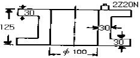
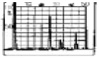
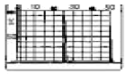
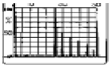
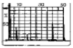
(정답률: 알수없음)
33. 황동에 대한 종파의 음향 임피던스는? (단, 황동의 밀도 : 8400kg/m3, 종파의 속도 : 4400m/sec, 횡파의 속도 : 2200m/sec)
- 37x106 kg/m2ㆍsec
- 18x106 kg/m2ㆍsec
- 37x107 kg/m2ㆍsec
- 18x107 kg/m2ㆍsec
(정답률: 알수없음)
34. 초음파탐상시험의 수직탐상에서 탐상목적과 탐상방향에 관한 설명중 올바른 것은?
- 초음파의 전파방향에 평행하게 넓게 퍼져있는 결함으로부터의 에코높이는 높게 검출하는 것이 용이하다.
- 결함을 가장 잘 검출하는 방향은 일반적으로 결함의 투영 면적이 최대로 되는 방향이다.
- 단조재에서는 주조시의 결함이 단조에 의한 소성변형에 따라서 변형하는 것이 되기 때문에 결함의 방향등은 추정할 수 없다.
- 단강품에 발생하는 결함은 탐상이 가장 용이한 방향에서 수직탐상만에 의해 모두 검출할 수 있다.
(정답률: 알수없음)
35. 초음파탐상시험들은 각각 검출특성 또는 사용한계에 따라 용도가 약간씩 다르다고 볼 수 있다. 부품의 모양, 크기에 관계없이 어떤 시험법도 적용 가능하다면 표면 근처의 결함을 평가하는데 가장 효과적인 시험법은?
- 경사각탐상법
- 투과법
- 수침법
- 수직탐상법
(정답률: 알수없음)
36. 똑같은 크기의 결함이 있는 경우 다음 중 초음파탐상시험에 의해 가장 발견하기 쉬운 결함은?
- 시험재 내부의 어떤 구형의 결함
- 초음파 진행 방향에 평행인 균열
- 초음파 진행 방향에 수직인 균열
- 이종 물질의 혼입
(정답률: 알수없음)
37. 경사각탐촉자의 입사점이나 굴절각을 측정하는 경우에 탐상기의 감도는 에코 높이가 몇 % 정도가 되도록 조정하면 좋은가?
- 10%
- 50~80%
- 25%
- 100%
(정답률: 알수없음)
38. 초음파탐상 시험방법중 투과법의 특징으로 틀린 것은?
- 두개의 탐촉자를 사용한다.
- 감쇠가 심한 시험체에 적용한다.
- 결함의 깊이를 정확히 알 수 있다.
- 결함에코가 스크린에 표시되지 않는다.
(정답률: 알수없음)
39. 다음 재료중 동일 거리에서 음향 감쇠가 가장 큰 것은?
- 단조품
- 원심주조품
- 압출품
- 냉간압연품
(정답률: 알수없음)
40. 경사각탐촉자의 전이손실(transfer loss)을 측정하는 이유는?
- 접촉매질의 성능을 점검하기 위하여
- 탐촉자의 고유 성능을 보정하기 위하여
- 검사체내에서의 음속의 감소를 보정하기 위하여
- 대비시편과 검사체간의 감쇠차이를 보상하기 위하여
(정답률: 알수없음)
3과목: 초음파탐상관련규격 및 컴퓨터활용
41. KS B ⑤35에 의하여 경사각 탐촉자로 불감대를 측정할 때 STB-A2 시험편의 ø4x4mm를 겨냥하여 최대가 되는 에코높 이를 눈금판의 20%로 맞춘 후 몇 dB 감도를 높여야 하는 가?
- 6dB
- 10dB
- 14dB
- 20dB
(정답률: 알수없음)
42. KS D 0233의 규격을 올바르게 설명한 것은?
- 이 규격에 규정된 이외의 일반사항은 KS D 0235의 금속재료의 펄스반사법에 따른다.
- 8mm 이상인 고품질 킬드강판중 스테인레스강 판재의 초음파탐상검사에 대한 규정이다.
- A스코프식 탐상기는 증폭 직선성, 원거리 분해능, 불감대 등에서 만족한 성능을 갖추고 있는 장비를 사용해야한다.
- 주사속도는 초당 200mm 이내로 하고 자동경보장치를 갖춘 수침법의 경우는 제한받지 않는다.
(정답률: 알수없음)
43. KS B 0896에 의한 경사각 탐촉자의 성능점검 중에서 작업 개시시 및 작업시간 8시간 이내마다 점검하는 것은?
- 접근한계길이
- 빔 중심축의 치우침
- 원거리 분해능
- 불감대
(정답률: 알수없음)
44. KS B ⑤35에 의한 모든 탐촉자의 공통측정항목이 아닌 것은?
- 시험 주파수
- 중심감도 프로덕트 및 대역폭
- 송신펄스폭
- 진동자의 유효치수
(정답률: 알수없음)
45. KS B 0831에서 규정하는 표준시험편중 N1, A1, A2형 STB에 적당한 재료는?
- 고탄소 크롬 베어링강
- 중탄소의 기계구조용 탄소강
- 저탄소의 크롬 몰리브덴강
- 스테인레스강
(정답률: 알수없음)
46. AWS type DC 시험편에 그림과 같이 탐촉자(굴절각 60°)를 올려 놓고 반사신호를 관찰하였다. 화면(스크린)상에 나타나는 반사신호의 순서는 어느 위치에 나타나는가? (단, 왕복거리를 단순히 실제거리로 나타냄. 왕복거리 2″: ⇒ 실제거리 : 1″)
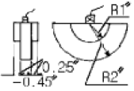
- 1″, 2″, 3″, 4″, 5″, ...
- 2″, 4″, 6″, 8″, ...
- 1″, 3″, 5″, 7″, 9″, ...
- 2″, 6″, 10″, 14″, ...
(정답률: 알수없음)
47. KS B 0897에 따라 초음파탐상시 경사각 탐촉자의 빔 중심축에서의 치우침은 몇 도를 넘지 않는 것으로 규정하고 있는가?
- 5°
- 3°
- 2°
- 4°
(정답률: 알수없음)
48. ASME SA-609에 따라 검사할 재료의 두께가 4인치일 때 사용할 탐촉자는?
- 2.25MHz, 직경 1인치
- 1MHz, 직경 1인치
- 4MHz, 직경 1/2 인치
- 2.25MHz, 직경 1/2 인치
(정답률: 알수없음)
49. ASTM E 213에서 비교 반사체로 사용되는 Notch의 설명 중 옳지 않은 것은?
- 형태는 보통 3종류로서 V-노치, 각홈, U자 형태가 있다.
- Notch의 폭은 작을수록 좋지만, 깊이의 2배보다 커서는 안된다.
- Notch의 길이는 진동자의 크기보다 커서는 안된다.
- Notch의 깊이는 상호 협의에 의해 정할 수 있다.
(정답률: 알수없음)
50. 건축용 강판 및 평강의 초음파탐상시험에 따른 등급분류와 판정기준인 KS D 0040에서 대표 결함의 정의는?
- 탐상선으로 구분한 각 구분의 최대 흠 에코높이를 나타내는 결함
- 점적률이 가장 큰 결함
- 환산된 결함 구분수 중 최대 결함
- DH선을 초과하는 결함 중 길이가 최대인 결함
(정답률: 알수없음)
51. KS B 0896에 따라 곡률을 가진 시험재를 탐상하기 위하여 RB-A6로 굴절각을 추정하려 한다. RB-A6의 두께가 tmm일 때 0.5skip의 결함 에코와 나타나는 탐촉자 위치에서 탐촉자 앞면부터 RB-A6 끝면까지의 거리를 pmm, 1skip의 탐촉자 거리에서 탐촉자 앞면부터 RB-A6 끝면까지의 거리를 qmm라 하면 탐상굴절각을 구하는 올바른 식은?
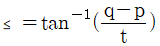
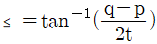
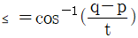
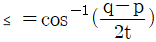
(정답률: 알수없음)
52. ASME Sec.V에서 거리진폭 교정곡선을 사용하여 탐상할 때 DAC를 점검하여 원래 작성된 곡선에서 진폭이 얼마나 감소되었을 때 모든 작업사항을 재검사해야 하는가?
- 20% 또는 2dB 감소
- 30% 감소
- 50% 또는 3dB 감소
- 10% 감소
(정답률: 알수없음)
53. KS D 0250(강관의 초음파 탐상검사방법)에서 경사각 탐촉자를 사용하는 경우 탐촉자의 두께 대 바깥지름의 비가 5.8%를 초과하고 20% 이하일 때 사용되는 공칭 굴절각이 아닌 것은?
- 35°
- 40°
- 45°
- 60°
(정답률: 알수없음)
54. KS B 0817에서 탐상도형의 표시 기호(기본기호) 중 잘못 표기된 것은?
- 송신펄스 : T
- 흠집에코 : F
- 측면에코 : S
- 바닥면에코 : B
(정답률: 알수없음)
55. KS B 0896에서 경사각 탐상시 초음파가 통과하는 부분의 모재는 필요에 따라 미리 수직탐상을 하여 탐상에 방해가 되는 흠을 미리 검출해야 하는데 이 때 탐상감도는 어떻게 해야 하는가?
- 건전부의 제1회 밑면 에코 높이가 50%가 되게 한다.
- 건전부의 제1회 밑면 에코 높이가 80%가 되게 한다.
- 건전부의 제2회 밑면 에코 높이가 50%가 되게 한다.
- 건전부의 제2회 밑면 에코 높이가 80%가 되게 한다.
(정답률: 알수없음)
56. 월드와이드웹의 서버와 클라이언트가 하이퍼 텍스트 문서를 송수신하기 위하여 사용하는 프로토콜은?
- PPP
- FTP
- HTTP
- SMTP
(정답률: 알수없음)
57. 컴퓨터 소프트웨어는 크게 응용 프로그램 패키지와 시스템 프로그램으로 나눌 수 있다. 다음 중 시스템 프로그램에 해당하지 않는 것은?
- 시스템 개발 프로그램(System Development Programs)
- 언어 번역기(Language Translators)
- 워드 프로세서(Word Processer)
- 운영체제(Operating System)
(정답률: 알수없음)
58. 중앙처리장치와 주 기억장치와의 처리 속도 차이를 줄이기 위해 사용되는 고속 메모리는?
- Cache memory
- Virtual memory
- Dynamic memory
- Auxiliary memory
(정답률: 알수없음)
59. 데이터통신 시스템 중 데이터 터미널 장치(DTE)의 기능으로 볼 수 없는 것은?
- 입출력 기능
- 신호 변환기 기능
- 전송 제어 기능
- 기억 기능
(정답률: 알수없음)
60. 인터넷 상에서 사용자가 원하는 키워드를 입력하여 사이트를 찾고자 할 때 사용할 프로그램은?
- 즐겨찾기
- 검색엔진
- 목록보기
- 인터넷옵션
(정답률: 알수없음)
4과목: 금속재료 및 용접일반
61. 다음 중 점용접의 3대 요소가 아닌 것은?
- 도전율
- 용접 전류
- 가압력
- 통전 시간
(정답률: 알수없음)
62. 아크용접에서 아크가 용접의 단위길이 1cm당 발생하는 전기적 에너지가 54000 J/cm인 경우 아크 전압 E가 30V이고 아크전류 I가 300A라고 하면 용접속도는 몇 cm/min 인가?
- 10
- 8
- 6
- 5
(정답률: 알수없음)
63. 피복제에 습기가 있는 상태로 용접했을 경우 많이 일어날 수 있는 현상으로 다음 중 가장 중요한 것은?
- 오버랩 현상이 일어난다.
- 크레이터가 생긴다.
- 언더컷이 생긴다.
- 기공이 생긴다.
(정답률: 알수없음)
64. 아세틸렌 가스가 충전된 용기의 무게가 62.5kgf인 용해 아세틸렌 용기를 가변압식 저압토치의 225번 팁(tip)을 사용하여 용접한 후, 아세틸렌가스 빈용기의 무게를 달았더니 58.5kgf이었다. 이 때 소모된 아세틸렌가스 부피는 몇 ℓ인가?
- 2250ℓ
- 2620ℓ
- 3250ℓ
- 3620ℓ
(정답률: 알수없음)
65. 일반적인 용접부의 용접변형 방지방법이 아닌 것은?
- 억제법
- 역변형법
- 냉각법
- 초음파법
(정답률: 알수없음)
66. 용접전류가 높아졌을 때 일어나는 현상이 아닌, 전압이 높아 졌을 때 발생하는 현상인 것은?
- 용입이 깊어진다
- 언더컷이 생기기 쉽다
- 스패터가 많이 생긴다
- 용접 비이드가 넓어진다
(정답률: 알수없음)
67. 용접을 할 때 전원을 사용하지 않고 화학반응의 발열 작용에서 생기는 열로 용접하는 방법은?
- 스터드 용접
- 일렉트로 슬랙 용접
- 테르밋 용접
- 불활성 가스 용접
(정답률: 알수없음)
68. 보기와 같은 용접기호에서 z7 이 의미하는 것은?
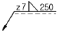
- 용접단면 치수
- 용접 목 두께
- 용접 목 길이
- 루트 간격
(정답률: 알수없음)
69. 용착된 금속의 급랭을 방지하는 목적이 아닌 것은?
- 용착금속 중에 가스나 슬래그가 떠오를 수 있는 시간을 주기 위함
- 모재와 용착금속이 자유로이 팽창, 수축하도록 하기 위함
- 담금질 경화를 방지하기 위함
- 슬래그 제거를 쉽게 하기 위함
(정답률: 알수없음)
70. 용접하려고 하는 금속판의 한쪽 또는 양쪽에 돌기 부분을 만들어 놓고 압력을 가하면서 전류를 통하면 집중열이 발생되면서 용접 되는 것은?
- 프로젝션(projection)용접
- 퍼커션(percussion)용접
- 스포트(spot)용접
- 시임(seam)용접
(정답률: 알수없음)
71. 변태점 측정방법이 아닌 것은?
- 열 분석법
- 전기 저항법
- X-선 분석법
- 확산법
(정답률: 알수없음)
72. 용융점이 가장 높은 원소는?
- Fe
- Cu
- W
- Ni
(정답률: 알수없음)
73. 다음 중 물리적 성질이 아닌 것은?
- 비중
- 융점
- 전도도
- 연신율
(정답률: 알수없음)
74. 구리의 일반적인 성질 중 옳지 못한 것은?
- 가공이 용이하다.
- 전기 및 열의 전도성이 우수하다.
- 전연성이 좋다.
- 건조한 공기 중에서 산화가 잘 된다.
(정답률: 알수없음)
75. 재결정된 금속의 입자 크기를 옳게 설명한 것은?
- 가공도가 작을수록 크다.
- 가열시간이 길수록 작다.
- 가열온도가 높을수록 작다.
- 가공 전, 결정입자가 크면 재결정 후, 결정입도가 작다.
(정답률: 알수없음)
76. 상온에서 열팽창계수가 매우 작아 표준자,샤도우 마스크, IC 기판 등에 사용되는 36% Ni-Fe 합금은?
- 인바(Invar)
- 퍼멀로이(Permalloy)
- 니칼로이(Nicalloy)
- 하스텔로이(Hastelloy)
(정답률: 알수없음)
77. 비정질합금의 제조법이 아닌 것은?
- 화학도금
- 금속가스의 증착
- 냉간가공법
- 액체급냉법
(정답률: 알수없음)
78. 구상흑연 주철의 기지조직에 속하지 않는 형은?
- 페라이트형
- 펄라이트형
- 시멘타이트형
- 소르바이트형
(정답률: 알수없음)
79. 강철을 오스테나이트(Austenite)조직으로 가열하였다가 냉각속도를 빠르게 함에 따라 조직이 변하는 순서대로 되어 있는 것은?
- 펄라이트→소르바이트→투르스타이트→마텐자이트
- 펄라이트→투르스타이트→마텐자이트→소르바이트
- 마텐자이트→소르바이트→펄라이트→투르스타이트
- 펄라이트→마텐자이트→소르바이트→투르스타이트
(정답률: 알수없음)
80. 오스테나이트 구조를 한 γ-Fe의 격자구조는?
- CPH
- FCC
- BCC
- BCT
(정답률: 알수없음)